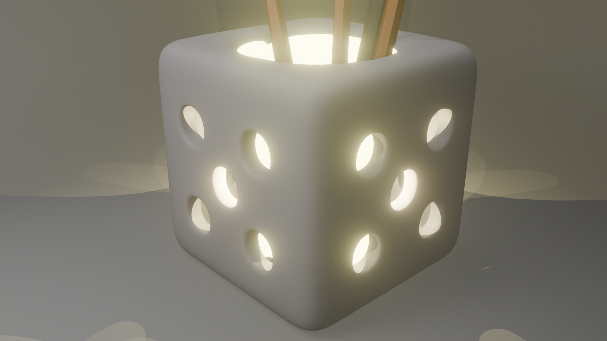
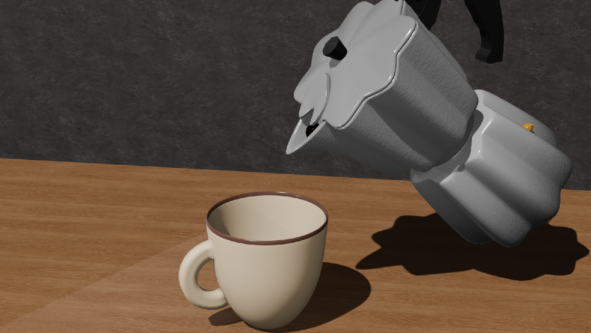
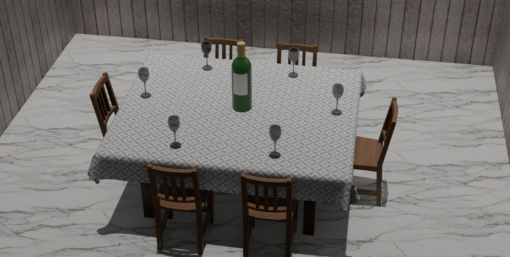
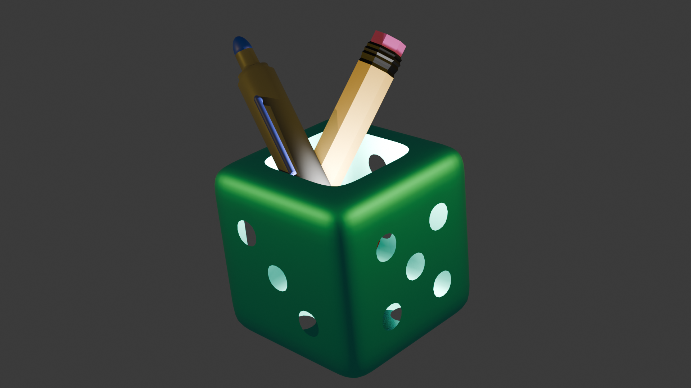
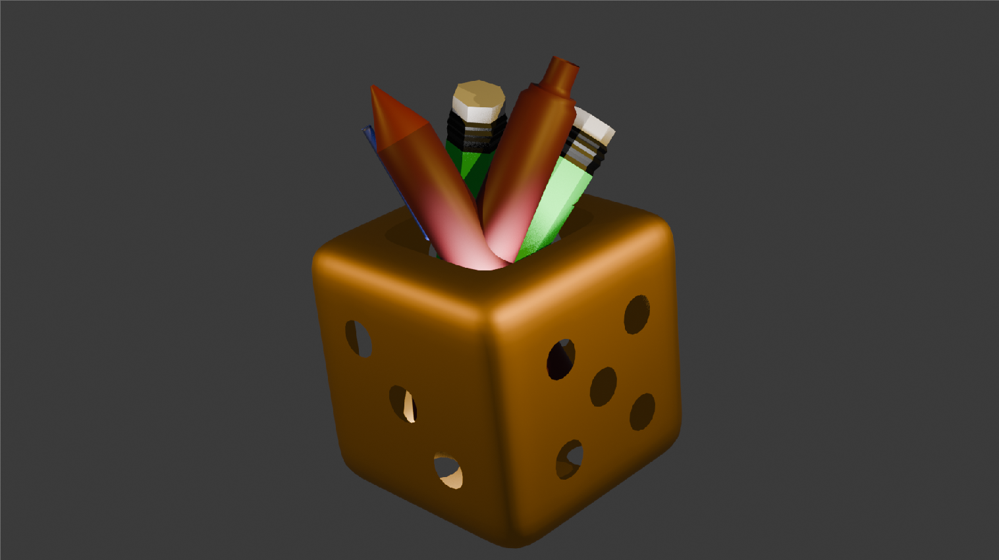
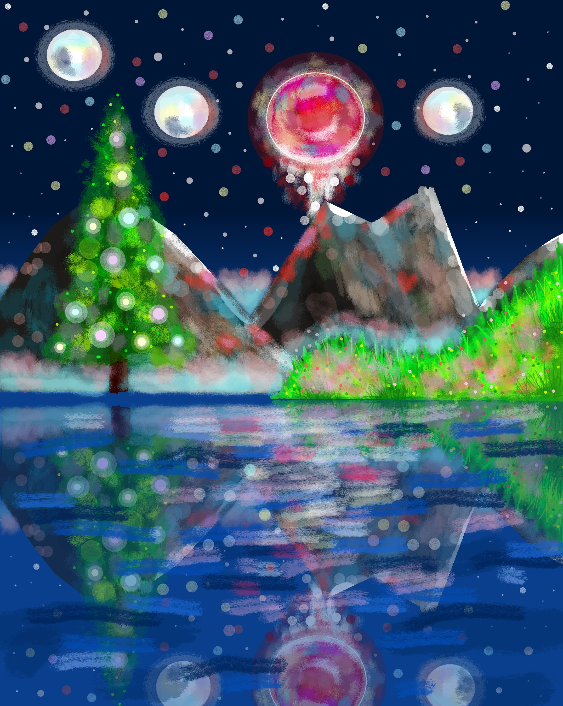

Filtrar por categoría:
Módulo 1: Krita
Selecciona un documento para visualizar el material teórico y práctico de este módulo:
Módulo 2: Open GL
Selecciona un documento para visualizar el material teórico y práctico de este módulo:
Módulo 3: Blender
Selecciona un documento para visualizar el material teórico y práctico de este módulo:
Laboratorio #1: Manejo de elementos gráficos en entornos digitales
Este laboratorio permitió comprender que el dominio de las herramientas básicas de Krita es un paso esencial para el desarrollo de proyectos gráficos profesionales.
ImagenLaboratorio #2: Manejo de elementos gráficos en entornos digitales
El presente laboratorio tiene como propósito fundamental introducir al estudiante en el proceso de vectorización digital de imágenes utilizando el software Krita.
ImagenLaboratorio #3: Manejo de elementos gráficos en entornos digitales
En este laboratorio se trabajó el manejo de elementos gráficos en entornos digitales utilizando Krita.
ImagenLaboratorio #4: Fundamentos de animación 2D
En este laboratorio se realizaron diferentes pruebas con programas básicos de OpenGL, modificando comandos relacionados con el color, la proyección, el tamaño y la posición de la ventana.
codigoLaboratoro #5: Fundamentos de animación 2D
En el presente laboratorio se desarrollaron actividades relacionadas con el uso de primitivas básicas en OpenGL, con el propósito de comprender cómo se construyen figuras gráficas a partir de instrucciones y coordenadas.
codigoLaboratorio #6: Fundamentos de animación 2D
En este laboratorio se desarrollaron diferentes ejercicios relacionados con los fundamentos de animación 2D y gráficos por computadora, utilizando transformaciones, iluminación, materiales, movimiento de objetos y control mediante teclado y ratón.
codigotaller 1:Herramientas gráficas
Taller en el que a traves de excel se desarrollaron algoritmos como el DDA,Bresenham y circunferencia.
taller 2:Manejo de elementos gráficos en entornos digitales
Se aplicando la lógica del algoritmo de relleno y los conceptos de transformaciones geométricas vistos en clase.
taller 4:Fundamentos de Animacion 2D
Taller en el que se creo un paisaje y casa utilizando OpenGL y GLUT.
taller 5:Fundamentos de animación 2D
Se creo un avion con diferente formas y el otro objetivo era animarlo.
taller 6: Técnicas y herramientas para gráficos 3D
Se desarrollo una imagen realizada con la herramienta blender en la que se creo una lampara con luz
imagen







.jpg)
 >
>

Proyecto #1
Este proyecto se elaboró en la herramienta Krita en la que se creo un paisaje.
archivo Krita
Proyecto #2
Este proyecto se elaboró en la herramienta OpenGl en la que se creo una via con carros y con la posibilidad de mover a uno en cualquier direccion arriba,abajo,derecha e izquierda.
archivo OpenGLinvestigacion #1
En esta investigacion se desarrollo sobre las diferentes herraminetas gráficas.
Conclusiones del Curso
Herramientas de Computación Gráfica
Lysmarie Rodríguez
El desarrollo de este curso de HCG me permitió consolidar una base sólida tanto teórica como práctica en computación gráfica. El aprendizaje comenzó desde los fundamentos matemáticos con algoritmos como DDA y Bresenham, y se extendió hasta el uso de software profesional como Krita y Blender. Fue una experiencia sumamente enriquecedora aprender a pasar de figuras bidimensionales a entornos tridimensionales complejos, asimilando conceptos clave como la manipulación de vértices y caras.
Kevin Campines
El aprendenizaje en HCG fue buen entender cómo funcionan los algoritmos de líneas y circunferencias por dentro, para luego aplicar herramientas potentes como OpenGL y Blender. La evolución de crear formas simples en 2D a estructurar objetos en 3D mediante vértices y caras, sumado al aprendizaje de simulaciones físicas y animación para video
Dereck Moreno
la materia de HCG ha sido una excelente experiencia de aprendizaje. Destaco especialmente el uso de tecnologías como OpenGL y Blender. Comprender la lógica detrás del modelado 3D —el comportamiento de las caras, junto con las técnicas de animación física, ademas estas herramientas nos dan la posibilidad de realizar diferentes proyectospor la cantidad de cosas que incoorporan."
Christofer Aparicio
HCG fue una experiencia clave para mi formación, donde combiné la teoría matemática de algoritmos gráficos con la práctica en herramientas como Blender y OpenGL. Aprendí el flujo completo de trabajo digital: desde trazar líneas en 2D hasta modelar en 3D manipulando vértices y caras. Finalmente, la integración de físicas a los objetos.
Gulam Chauhan
HCG fue una buena experiencia donde puede aprender sobre los diferentes algoritmos como DDA,Breseham,Circunferencia entre otro, tambien las diferentes herramientas de computacion grafica krita, openGL, Blender. pude aprender como hacer formas en 2d y 3d ademas de como trabajar con vertices, caras etc y como aprender a aplicarle animaciones fisicas para crear video.